AutoCAD
I worked on a few AutoCAD projects, working with 2D drawings and 3D tools.
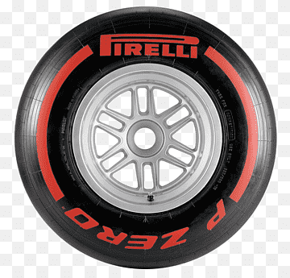
01 / DRIVER PROFILE
My name is Hanny. I'm from Colombia, and I'm a student. I'm interested in sports, art, especially music, design, design, architecture, and technology. I enjoy drawing, learning, exploring new places and admiring nature.
02 / THE GARAGE
I worked on a few AutoCAD projects, working with 2D drawings and 3D tools.
Music is an important part of my life, I currently play the bass and a few years ago I played the violin for a few months.
From visual concepts to creative ideas, I enjoy experimenting with composition, colors, spaces and different styles.
03 / RACING LINE
My biggest racing passion
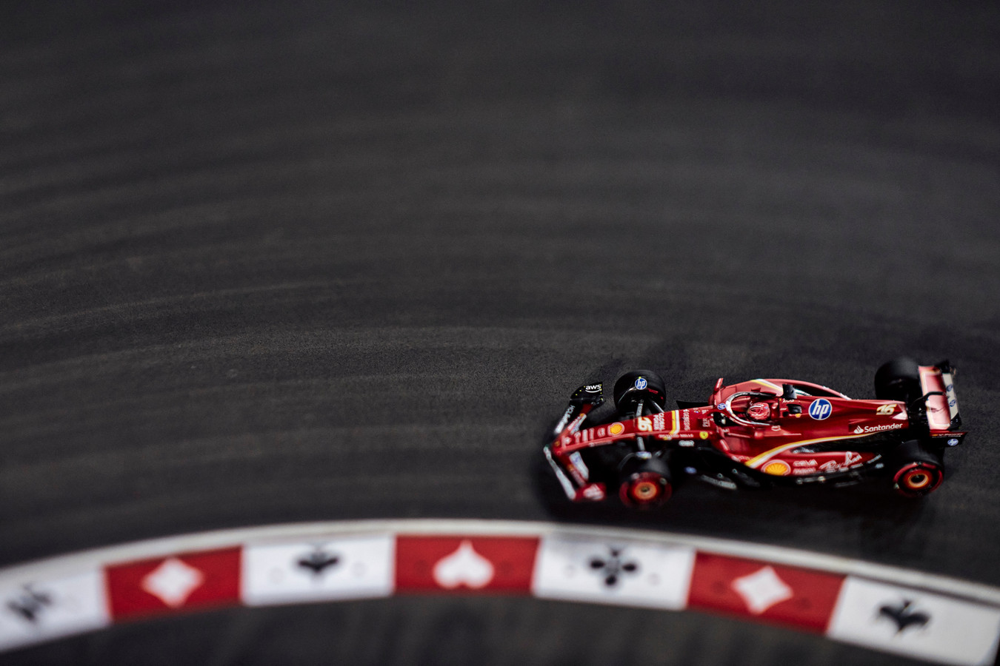
01 / RACING
Formula 1 is one of my biggest passions. I love watching the races and learning about the cars, teams and history of the sport. I'm a tifosi fan and have been supporting Charles Leclerc oficially since 2024.
Another sport I love
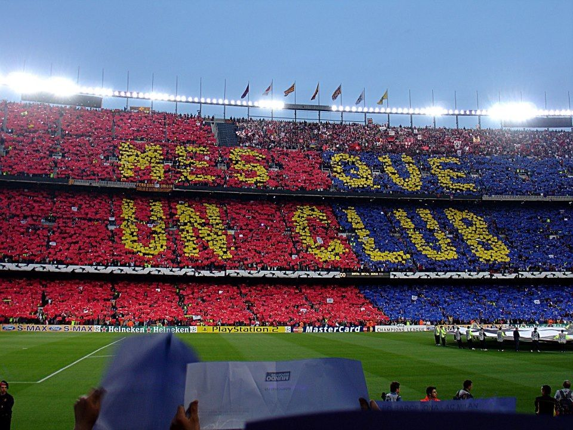
02 / SPORT
Football is another sport I enjoy following. I like the atmosphere and the passion for the teams. My team is FC Barcelona, which I support since I was a kid.
Bass, violin and a passion for music
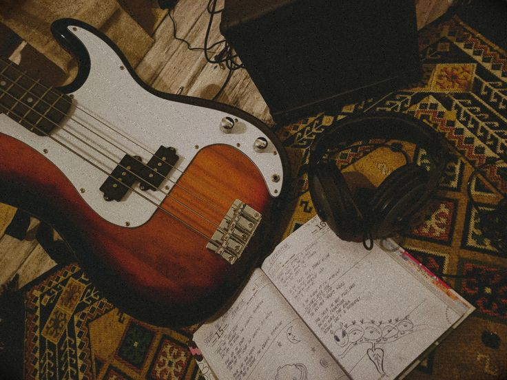
03 / MUSIC
Music is an important part of my life. I play the bass and for the past few years, the violin. Music is always with me; I'm a music lover. I listen to music all the time.
Drawing, painting and the art of observation
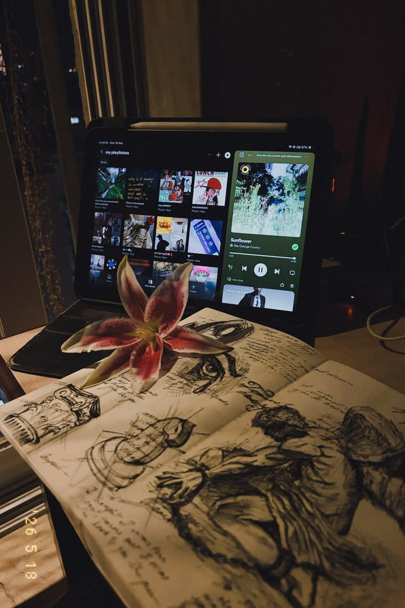
04 / ART
I can say that art is my greatest passion: drawing, painting, photography, music, and the art of observing and admiring my environment it's amazing. I love to create.
Learning and experimenting with technology

05 / TECHNOLOGY
Technology is a field that I enjoy learning about. I like to experiment with new tools, software and hardware, and I am always curious about the latest technological advancements.
Designing and appreciating architectural works
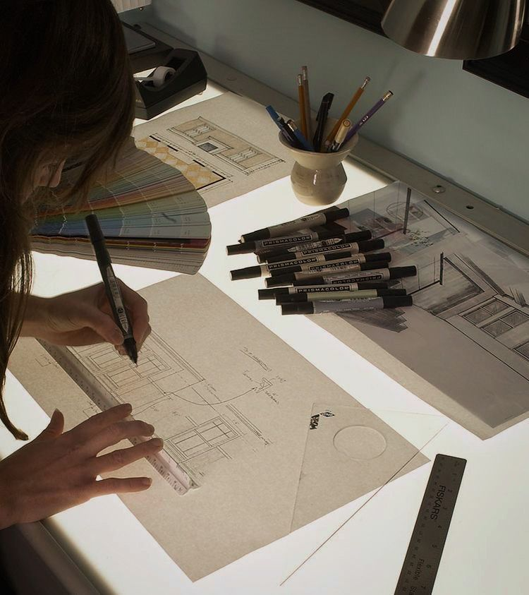
06 / ARCHITECTURE
It's the art of appreciating one's surroundings from a different perspective. Over time, architecture caught my attention, and the way I see my surroundings has changed. Now, one of my goals is to build a career in that field.
04 / LAP LOG
LAP 001 - 18.09.2026
This is the start of my personal website. I built the first version with HTML and CSS in Visual Studio Code as a practice project to learn how GitHub works. I choose a racing theme because Formula 1 is one of my biggest passions, and I wanted the page to feel like my own garage.
LAP 002 - 19.09.2026
The photos in the "Things I love" section were not showing up. The problem was that the information opened inside a very small column, so the image got squeexed. I fixed it by making each block open in a full row, with the image on the left and the text on the right. I also made it so only one block stays open at a time.
LAP 003 - 19.09.2026
I uploaded my website to GitHub and published it with GitHub Pages. When i tried to sync, Git showed a "cannot lock ref" error, but my changes were still saved on my PC, so I could push them again.
LAP 004 - 20.09.2026
I gave the website a real Formula 1 style. I added the starting lights, a red soft tyre and a checkered flag. The starting lights are based on the real ones from a grand prix, and it was fun to get the details right. And I added the tires along with the songs.
05 / GARAGE RADIO
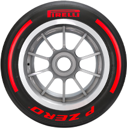
Viva la Vida
Coldplay
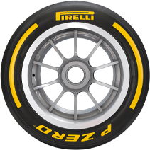
Don't Stop Me Now
Queen
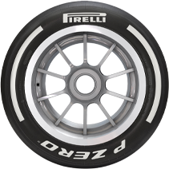
Hey Jude
The Beatles
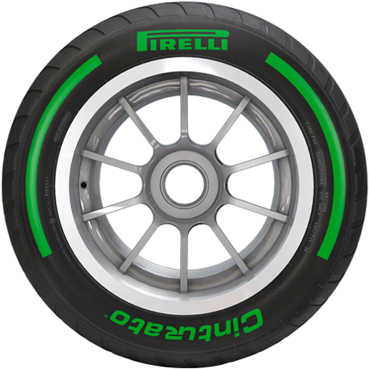
Smooth Operator
Sade
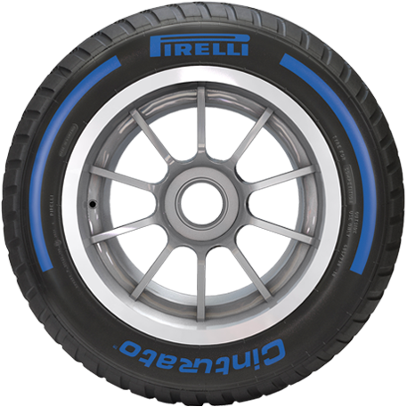
Skyfall
Adele